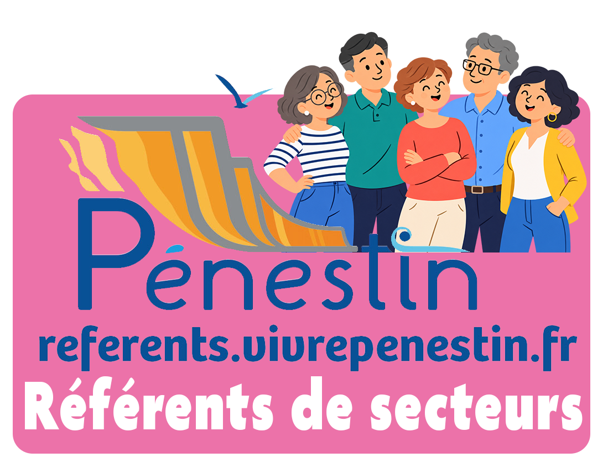
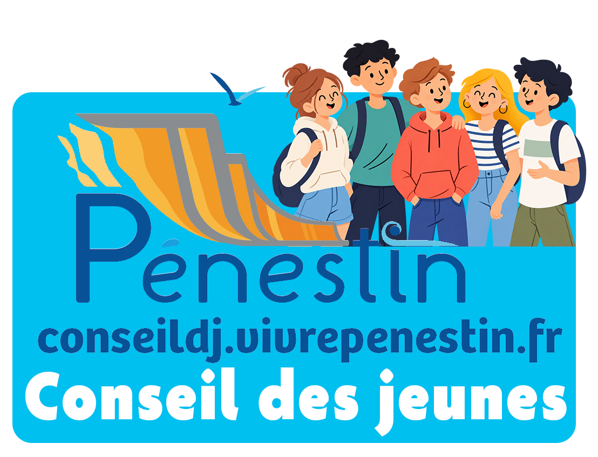
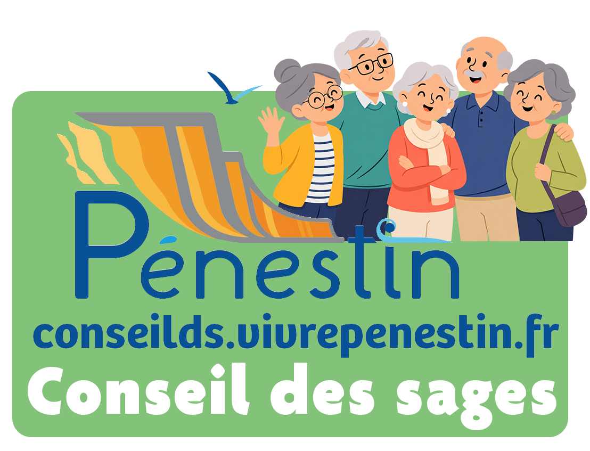
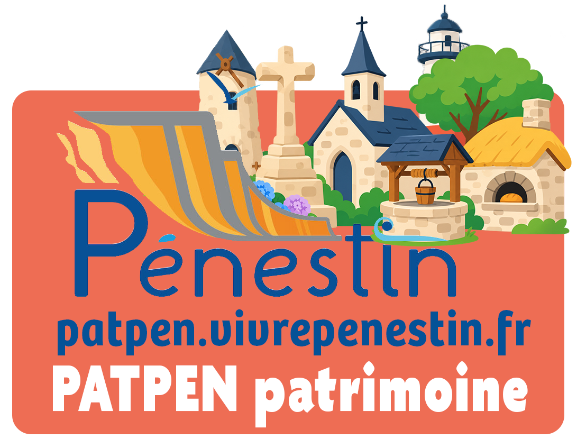
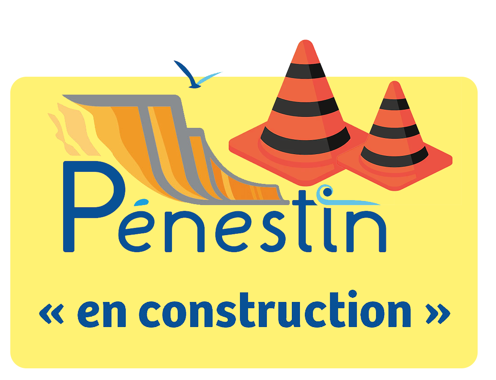

Les Référents de secteur, le Conseil des Jeunes, le Conseil des Sages et l'Inventaire Participatif du Patrimoine contribuent à renforcer le dialogue avec les habitants, à valoriser les initiatives locales et à préserver l'identité de notre commune.




